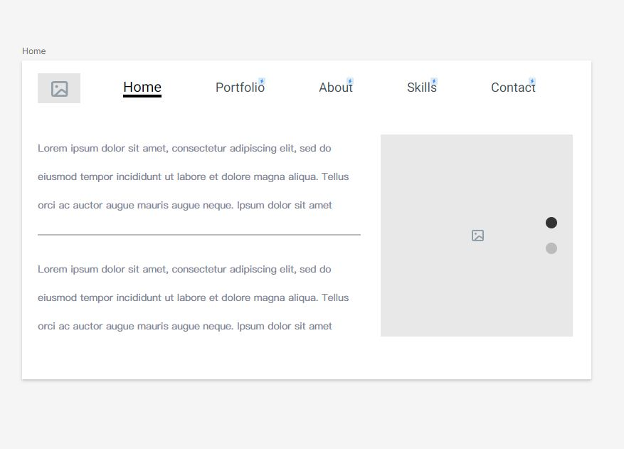
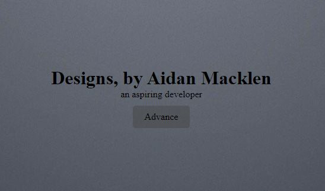

1. Idea
For this part of the project I was essentially picking out my topic selection as well as laying out my goals and design of the webpage on a pdf in a nice format.
2. Wireframe
For this part of the project I was essentially designing the layout of exactly how I wanted my page to look. I did this by using a wireframe which is very helpful.
3. HTML & CSS
This part of the project was the most time consuming by far, as I was essentially just taking my wireframe from the previous part and coding it into reality. It was very satisfying seeing the final part once I was done (of this step).
4. Colors - Pictures - Text
This part of the project was pretty fun to me as I just got to mainly design the page that I initially was thinking of. Now that I had gotten the main structure of the page set up, I let my creativity run free.